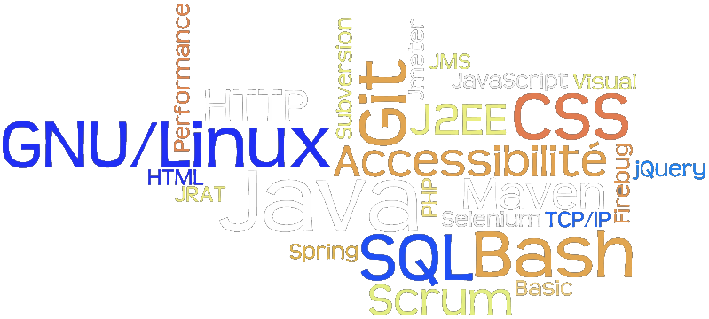
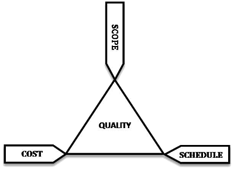
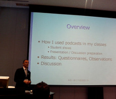

Développement (Logiciel) Durable
Maintenabilité des applications
Laurent Cottereau

Questions préliminaires
- Différence entre projet et maintenance ?
- Différents types de maintenance ?
- Différents types d'informatique ?
Informatique de Gestion
- métier
- ergonomie
- multi-tâche
- architecture technique
- performances
La vie d'un nouvel arrivant
- Prise en charge de la maintenance d'une application
- correction d'un bug simple et livraison
- nouveau bug lié à une duplication de bug
- régression fonctionnelle
La vraie vie de développeur
Qu'est-ce que la maintenabilité ?
3 contraintes en projet

Qualité ? Maintenabilité ?
assez flou
- gestion de la durée
- qualité difficile à redresser
Proposition de définition
Capacité à pouvoir maintenir une application
- quel que soit le type de maintenance
- sur le long terme
- cela a un coût
Adaptation au contexte



Pourquoi cette présentation ?
Programmers are constantly in maintenance mode
- Il y a du boulot
- Il y a des choses à apprendre
- Devenir de meilleurs développeurs
Ce que l'on verra
- 5 Bonnes pratiques
- Gestion des environnements
- Usine de développement
- Indicateur de maintenabilité
Ce que l'on ne verra pas
- Organisationnel
1 ‐ #WTF
KISS
Keep It Simple, Stupid
Code expressif / lisible
Calendar c = new GregorianCalendar();
Calendar b = j.bd();
if (b != null
&& c.get(Calendar.DAY_OF_YEAR) ==
b.get(Calendar.DAY_OF_YEAR)) {
return gift;
}
if (joe.hasBirthday()) {
return gift;
}
when(joe.hasBirthday()).thenReturn(gift);
2 ‐ Less Is More
Moins de fonctionnalité
Comprenez ce que vous faites !
Soyez curieux !
Réfléchissez à ce que vous commitez
A supprimer
/**
* $Id:$
* @author toto
*/
public int doSomething() {
//System.out.println("TOTO");
return x;
//return x*2;
}
A garder
/*
* (c) Copyright 2013 Laurent Cottereau
*
* This file is part of Foobar.
* Foobar is free software: you can redistribute it and/or
* modify it under the terms of the GNU General Public
* License as published by the Free Software Foundation,
* version 3 of the License.
* You should have received a copy of the GNU General Public
* License along with Foobar.
* If not, see <http://www.gnu.org/licenses/>.
*/
/**
* commentaire utile.
* TODO penser à implémenter autre chose.
Bibliothèques, API et Frameworks
Différences ?
Valeur ajoutée

Critères de choix
- Open Source
- Communauté
- Documentation
- Prix
- Inadéquation au besoin
Pépite : Lombok
Ne pas coder ce qui est évident
@Getter(lazy=true)@ToString@XXXArgsConstructor@Data@Cleanup@Log- ...
Sans Lombok
@Entity
@Table(name = "School")
public class School {
@Id
@GeneratedValue(strategy = GenerationType.IDENTITY)
@Column(name = "id_school")
private int idSchool;
@Column(length = 128, name = "name_school")
private String nameSchool;
@Column(length = 128, name = "adress_school")
private String adressSchool;
@Column(name = "validate_school")
private boolean validateSchool;
public School() {
}
public int getIdSchool() {
return idSchool;
}
public void setIdSchool(int idSchool) {
this.idSchool = idSchool;
}
public String getNameSchool() {
return nameSchool;
}
public void setNameSchool(String nameSchool) {
this.nameSchool = nameSchool;
}
public String getAdressSchool() {
return adressSchool;
}
public void setAdressSchool(String adressSchool) {
this.adressSchool = adressSchool;
}
public void setValidateSchool(boolean validateSchool) {
this.validateSchool = validateSchool;
}
public boolean isValidateSchool() {
return validateSchool;
}
}
Avec Lombok
<dependency>
<groupId>org.projectlombok</groupId>
<artifactId>lombok</artifactId>
<version>0.11.6</version>
<scope>provided</scope>
</dependency>
@Entity
@Data
public class School implements Serializable {
@Id
@GeneratedValue(strategy = GenerationType.IDENTITY)
private int id;
@Size(max = 128)
private String name;
@Size(max = 128)
private String address;
private boolean isValidated;
}Difficultés
- Intégration à l'IDE
- Debug
- #WTF
DRY – don't WET
Every piece of knowledge must have a single, unambiguous, authoritative representation within a system.
Convention over configuration
- valeurs par défaut
- code spécifique / paramétrages
La modération doit être le premier soin de l'homme.
function(a,b,c,d){d+=c;
return[d<0|a&b<<d?a=parseInt((a|b<<c)
.toString(d=32,b=new Date&2|1)
.replace('v',''),d)
:a|b<<d,a,b,d]}
140byt.es3 ‐ Votre code est votre documentation

Contractualisation
Obligé de faire des documents Word ?
⇨ dédoublez la documentation
Remerciements
- Power Poligon
- Wordle
- F. Mathé
- Wikimedia
- http://obinoobie.deviantart.com/art/Microsoft-Office-Word-Icon-195507790